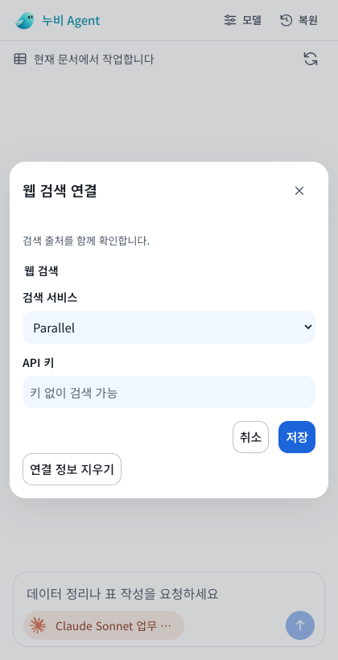
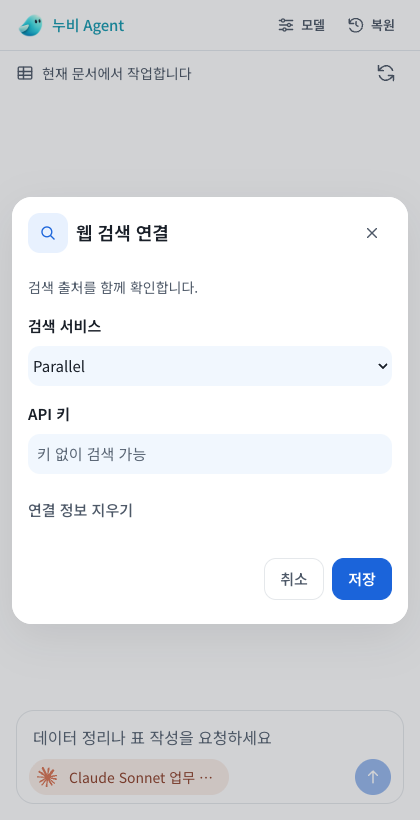
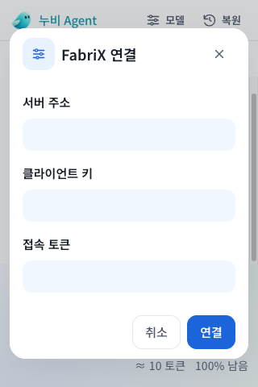

누비 Office 폼 개선
Workspace의 폰트, 색상, 간격을 기준으로 세 Office 앱의 폼을 맞췄습니다.
모델 선택
긴 이름과 문맥 정보는 두 줄로 읽고, 선택 항목과 적용 버튼을 강조합니다.
웹 검색 연결
필드 간격과 하단 취소·저장 버튼을 통일했습니다.
변경 전
변경 후
좁은 창에서도
문서 선택 280pxFabriX 연결 320px
브라우저의 모의 WebView 화면입니다. 실제 Windows Office 2016 화면의 검증은 남아 있습니다.